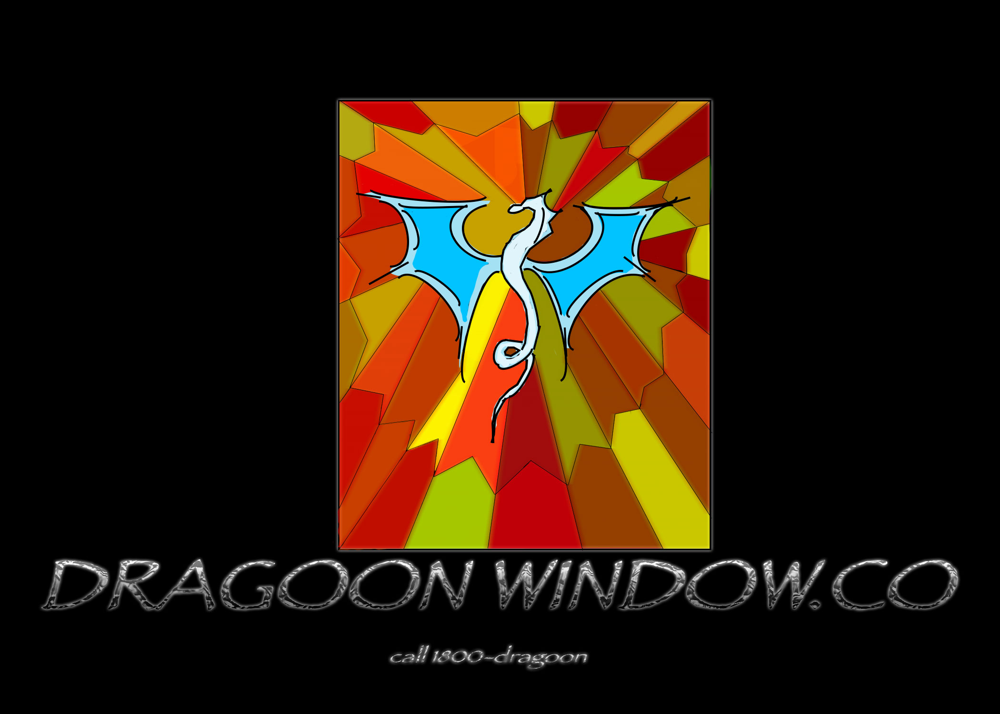
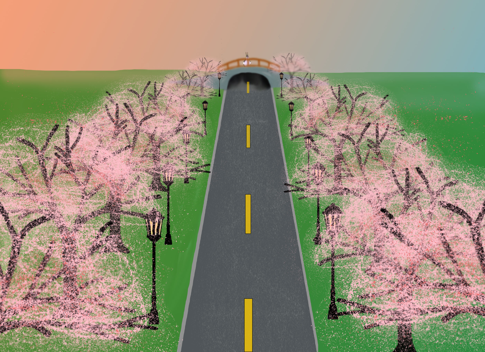
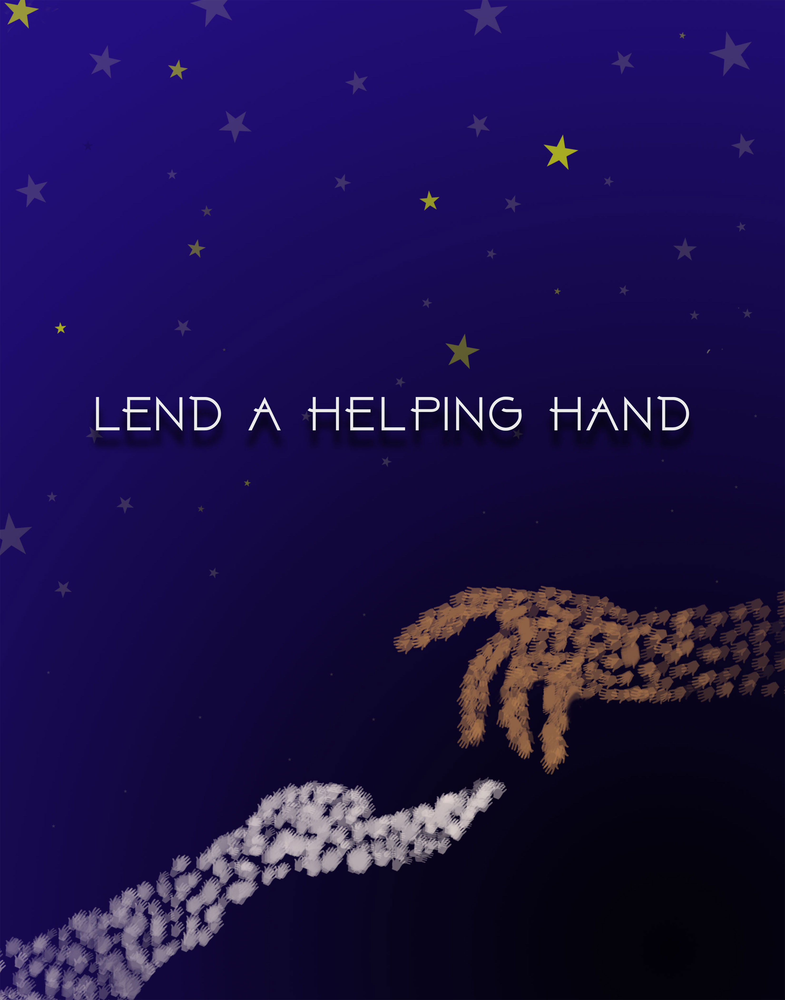

This is a image I made as a potential logo for a imaginary company that may or may not exist. What inspire me to make this is stained glass art so I made this in a way to look like stained glass. If I could go back and improve on it I’ll change the dragon on the glass and give the glass a glass texture.

These images are my attempt to make a sakura tree walkway. For a 3 point perspective project. It is inspired by many anime scenes, I just tried to recreate it with a twist and it didn't end up as well as I would’ve liked. The things I wish I could improve on it is to simply have the colors be more vibrant change all the trees they need to be remade, and the vanishing point needs to move. But because I spent a fair amount of time on it it's here.

This is an image of two people lending a hand to help each other. This was a volunteer poster that I made. It was supposed to represent a lending hand of some sort. The reason why it's here is because I think it's one of my most finished pieces.